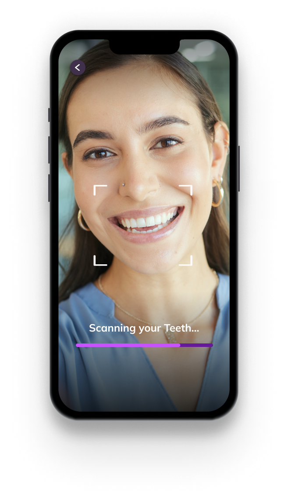
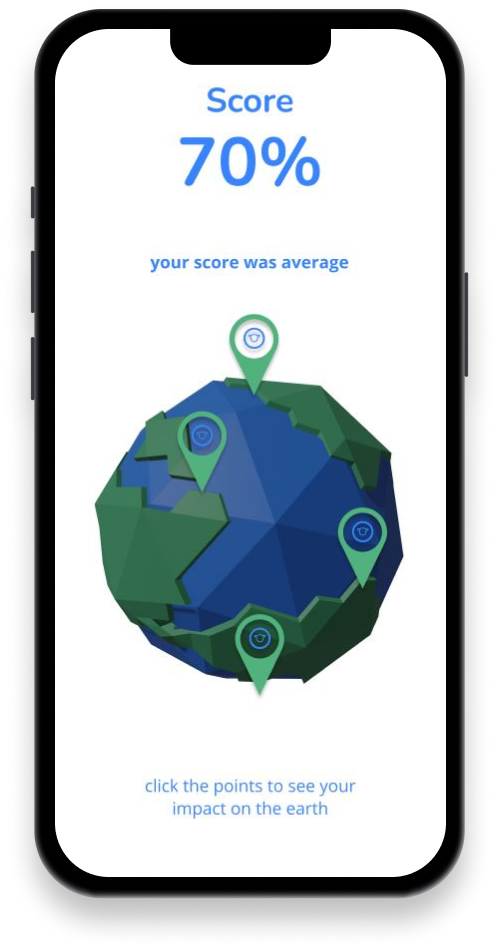
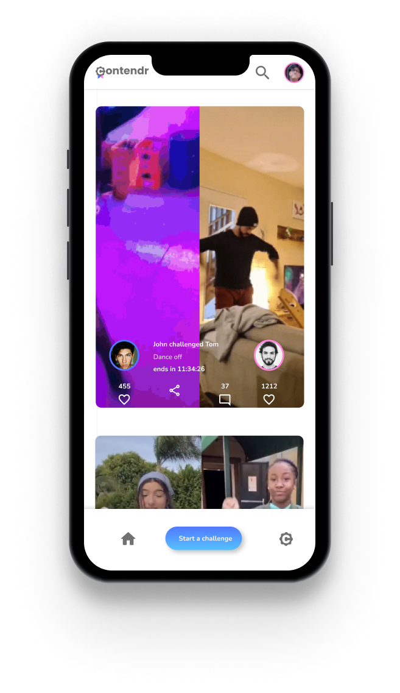
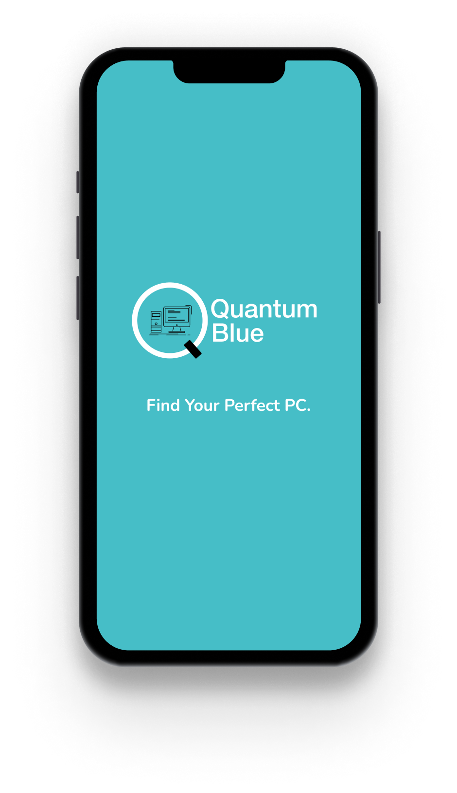
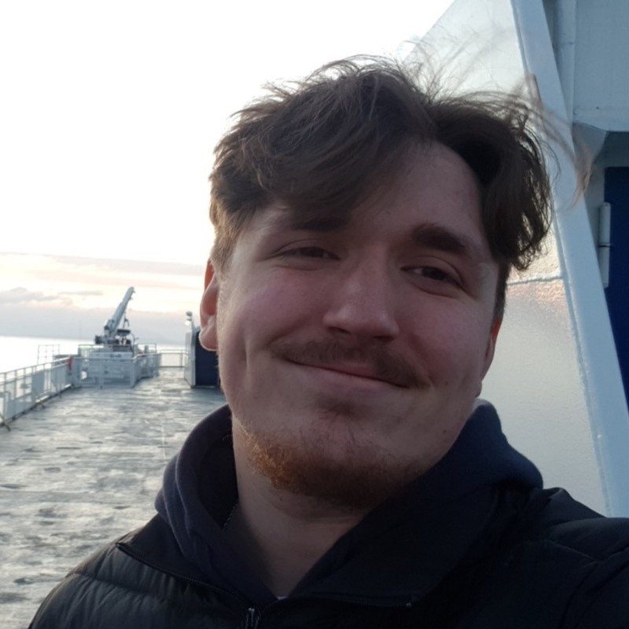

My name is Jesse Welk. I am a driven graphic designer and developer with a passion for
taking on work that is creatively and technically challenging. I found my passion for digital design at BCIT,
and I became invested in working with the Adobe Suite software, where creativity and work go hand in hand. My
goal is to establish a career in brand design as well as expand my coding abilities with front-end and UI/UX
design work.
My Projects

WhiteStone
The most recent project is WhiteStone. The objective of WhiteStone was to establish an affordable alternative to in-person oral care and consultation through the application of machine learning. It aimed to offer oral health diagnosis and recommendations for individuals with a lower income. The project began with the question, "How can a service with AI be created to assist those in need?"
The execution of this project demanded a range of skills. The primary role undertaken in the project involved the design and front-end implementation aspects of the app. This encompassed the utilization of Figma for prototyping and Adobe Suite software for developing the app's style.
In November 2023, the project was presented at the BCIT Telus Theatre to the mayor of
Burnaby as well as other esteemed guests.
Ecoture
The previous project was an online interactive sustainability test named Ecoture. The objective of this project was to enable visitors that live in the Fraser Valley to assess the size of their carbon footprint based on various questions.
Significant emphasis in Ecoture was placed on front-end design. Figma was employed for prototyping early designs, and Adobe Suite software was used to generate design assets for the project.
Ultimately, the project required various user tests to evaluate the responses users might experience while utilizing the app. The result provided a user-friendly and inviting UI/UX for the project.


Contendr
This project was much more reliant on different design skills and softwares than the others. The objective of this project was to create the concept and marketing page for a social media app.
With a larger focus on the visual and ideation side of app development a majority of the work was done in design softwares such as Figma, Adobe Illustrator and Photoshop, as well as video editing in After Effects.
Quantum Blue
This was a project focusing on the Ui/UX of a build your own pc website. The goal was to design a questionaire that helped users find the right parts for their PC depending on what they need it for

